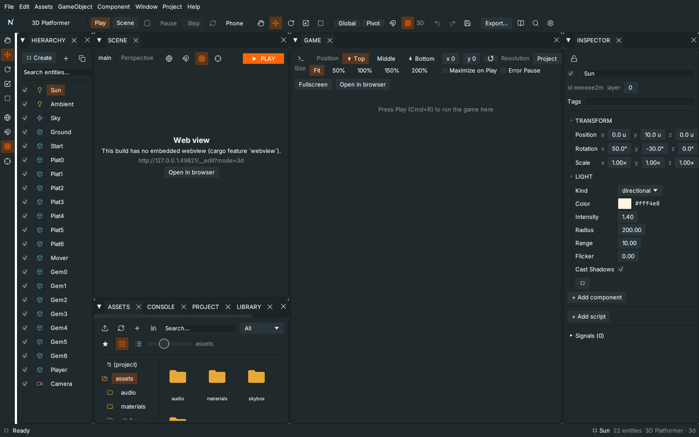
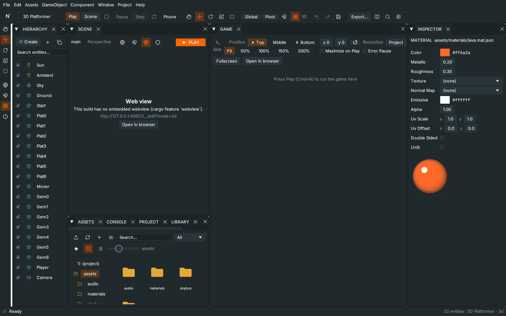
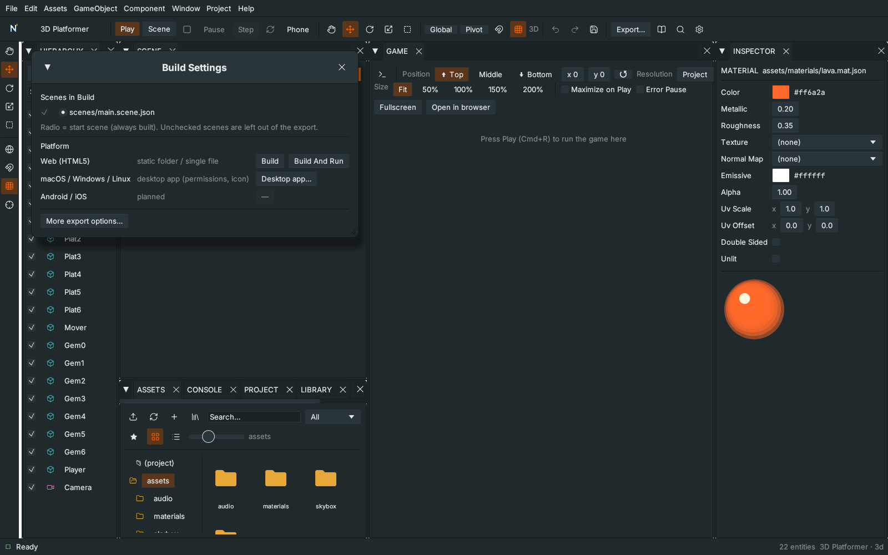

T47 The Unity-style workflow
Result: a small 3D scene with a lava-coloured cube that is a prefab, a variant of it, a score kept by a GameManager, and a web build you open with one click. Allow 25 minutes. Start from: any 3D project (nord new lab -t 3d).

1. Layout and a fresh scene#
- Window ▸ Layout ▸ Unity 2 by 3. Hierarchy is on the left, Scene and Game side by side, Inspector on the right.
- File ▸ New scene…, name it
lab, template 3D starter. You get a camera, a sun, a ground and a cube.
2. Move around the Scene view#
- Alt + left-drag orbits, Alt + Cmd + left-drag or middle-drag pans, the wheel zooms, F frames the selection, Shift+F frames everything.
- Click the cube. Press W (move), E (rotate), R (scale). Hold Ctrl/Cmd while dragging to flip snapping for that drag.
- Shift-click a second object: the Inspector now says 2 ENTITIES SELECTED and edits both at once.
3. A shared material#
- Assets ▸ Create ▸ Material, name it
lava. Select it: set Color#ff6a2a, Roughness0.35. - Select the cube. In its
materialcomponent set Asset toassets/lava.mat.json. Every cube that uses this file now changes when you edit it.

4. A prefab and a variant#
- Right-click the cube in the Hierarchy ▸ Create prefab (or drag it onto the Assets panel). It becomes a blue instance.
- Duplicate the instance (Cmd+D) a few times and move them apart.
- In Assets, right-click
Cube.prefab.json▸ Create variant. Open the variant instance's Inspector, change a value, then Apply all: the variant stores only its own change and keeps following the original. - Select an instance and press Open prefab: the bar above the Scene shows ◀ Scene › Prefab: Cube. Change the scale, press ◀ Scene. It saves automatically and every instance updates.
5. A GameManager for the score#
- Assets ▸ Create ▸ GameManager script, name it
game-manager.js, and attach it to an empty entity namedManager(GameObject ▸ Empty, then drop the script on it). - Assets ▸ Create ▸ MonoBehaviour script, name it
coin.js, and replace its content with:
import { MonoBehaviour, GameManager } from 'nord';
export default class Coin extends MonoBehaviour {
OnTriggerEnter(other) {
if (!other.CompareTag('player')) return;
GameManager.instance.AddScore(10);
this.Destroy();
}
}- Attach
coin.jsto a cube that has a triggercollider, and give the player the tagplayer. Press Play (F5). Open Window ▸ Profiler to see the frame time. - Tick Error Pause in the Game toolbar: the game pauses on the first error, which is a good habit while you experiment. The 📷 button saves a screenshot into
screenshots/.
6. Build it#
File ▸ Build Settings… (Shift+Cmd+B). Untick scenes you do not want to ship, pick lab as the start scene, press Build And Run. The page opens in your browser.

Check yourself: the lava cubes share one material file; editing the prefab changed every instance; GameManager.instance.score goes up when a coin is touched. If a step does not match, the Help ▸ First 10 minutes checklist shows what the editor still sees as missing.
Reference: Unity-style workflow, Scripting ▸ Unity-style scripting. Next: T10 3D scene & camera.